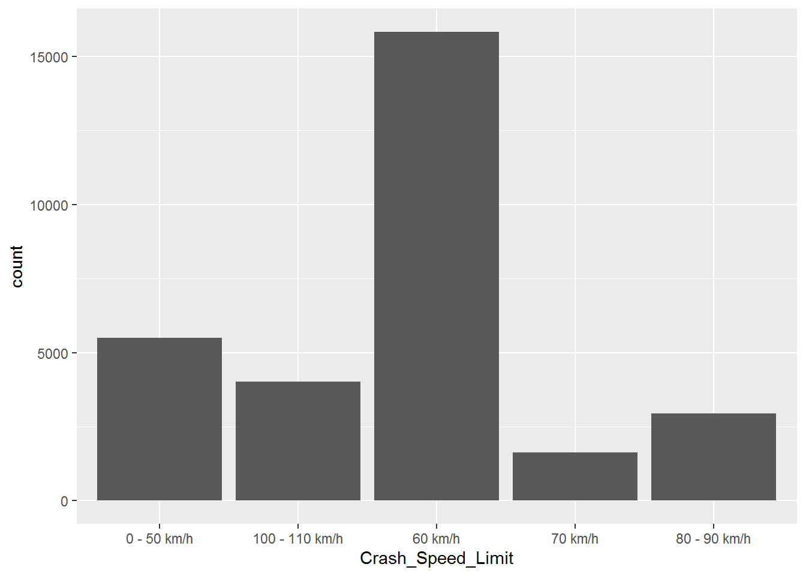
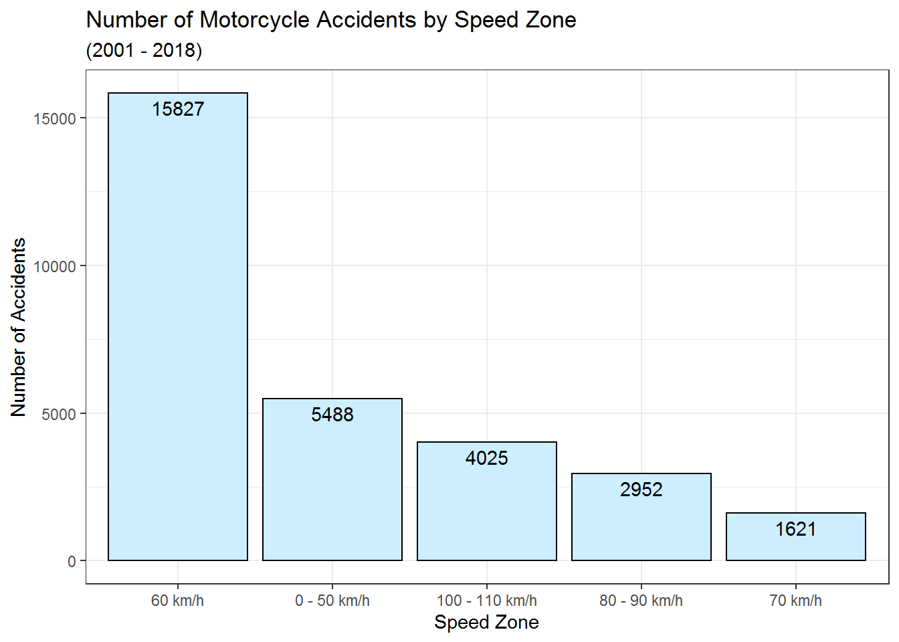
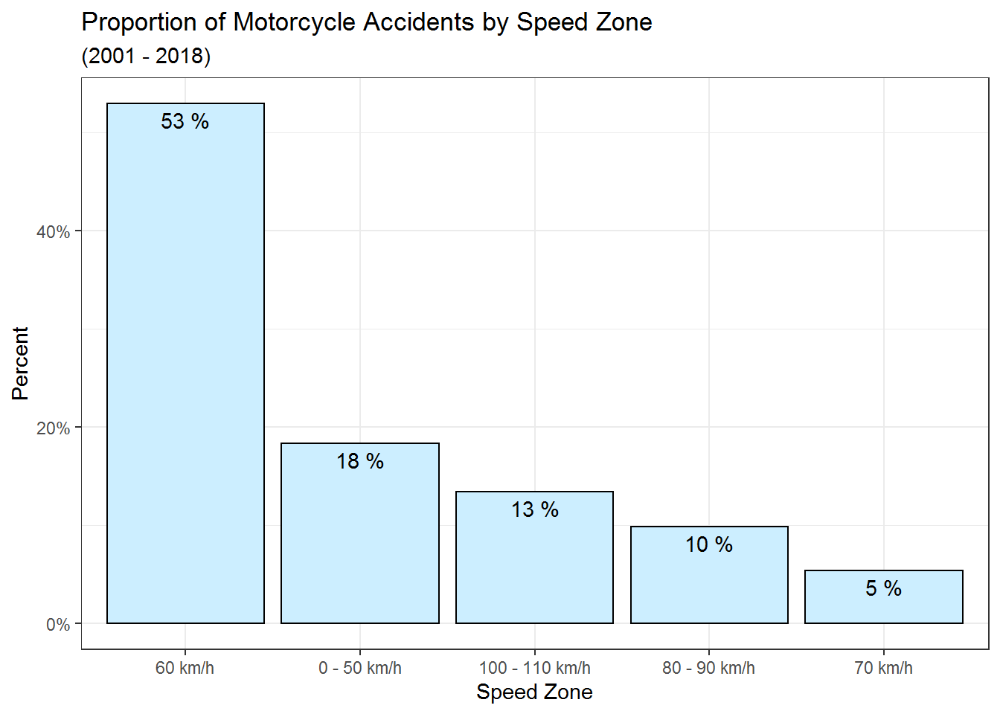
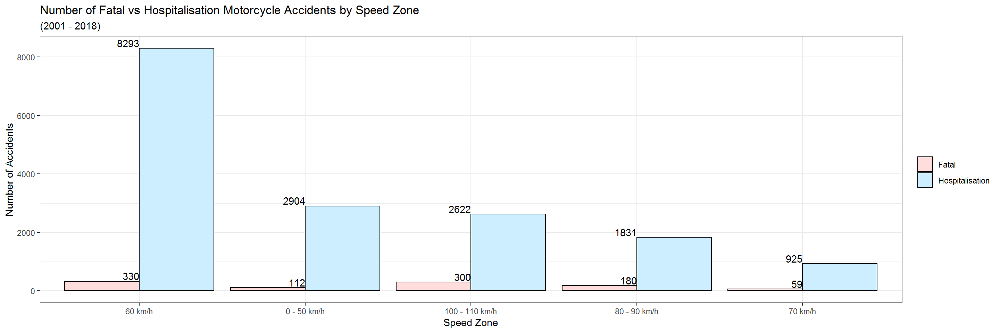
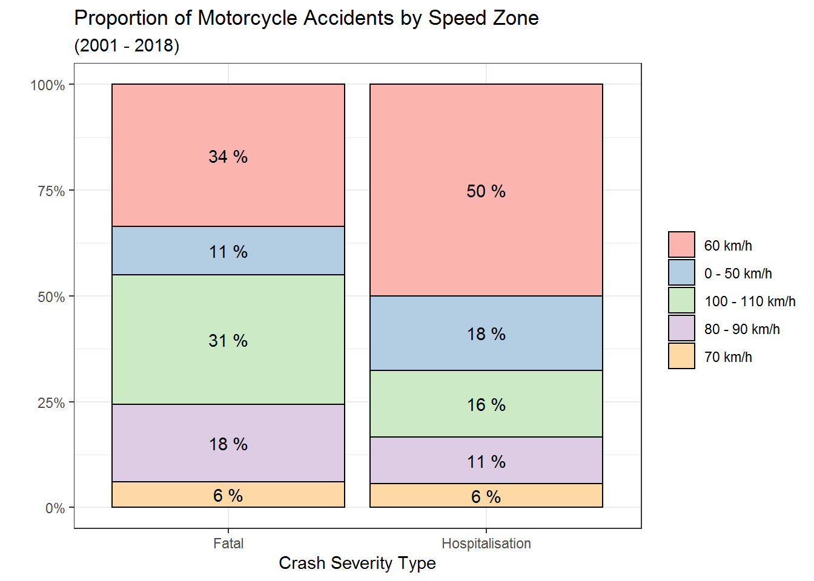
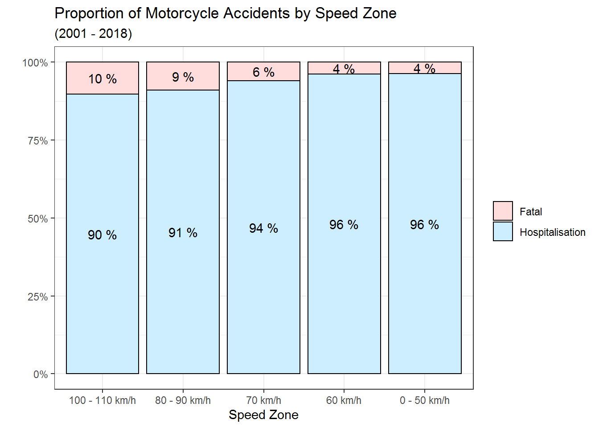

Below is an introduction to EDA with categorical variables. THis should give a decent starting point when you want to start your analysis.
If you knowledge of ggplot needs some work then this book is really good : https://r-graphics.org/
library(tidyverse)## -- Attaching packages --------------------------------------- tidyverse 1.3.0 --## v ggplot2 3.3.2 v purrr 0.3.4
## v tibble 3.0.4 v dplyr 1.0.2
## v tidyr 1.1.2 v stringr 1.4.0
## v readr 1.4.0 v forcats 0.5.0## -- Conflicts ------------------------------------------ tidyverse_conflicts() --
## x dplyr::filter() masks stats::filter()
## x dplyr::lag() masks stats::lag()library(readr)
library(dplyr)
library(ggplot2)
library(kableExtra)##
## Attaching package: 'kableExtra'## The following object is masked from 'package:dplyr':
##
## group_rowsWe are going to be using crash data from the QLD government. So lets go ahead and grab it.
crash_data <- read_csv("http://www.tmr.qld.gov.au/~/media/aboutus/corpinfo/Open%20data/crash/locations.csv")##
## -- Column specification --------------------------------------------------------
## cols(
## .default = col_character(),
## Crash_Ref_Number = col_double(),
## Crash_Year = col_double(),
## Crash_Hour = col_double(),
## Crash_Longitude_GDA94 = col_double(),
## Crash_Latitude_GDA94 = col_double(),
## Crash_DCA_Code = col_double(),
## Count_Casualty_Fatality = col_double(),
## Count_Casualty_Hospitalised = col_double(),
## Count_Casualty_MedicallyTreated = col_double(),
## Count_Casualty_MinorInjury = col_double(),
## Count_Casualty_Total = col_double(),
## Count_Unit_Car = col_double(),
## Count_Unit_Motorcycle_Moped = col_double(),
## Count_Unit_Truck = col_double(),
## Count_Unit_Bus = col_double(),
## Count_Unit_Bicycle = col_double(),
## Count_Unit_Pedestrian = col_double(),
## Count_Unit_Other = col_double()
## )
## i Use `spec()` for the full column specifications.I am going to trim this down to investigate speed zone and crash severity as my categorical variables. And I am only interested in Motorcycle accidents.
crash_data_eda <- crash_data %>% filter(Count_Unit_Motorcycle_Moped > 0 ) %>% select(Crash_Severity,Crash_Speed_Limit)
crash_data_eda <- na.omit(crash_data_eda)Take a look at the structure of the data.
glimpse(crash_data_eda)## Rows: 29,913
## Columns: 2
## $ Crash_Severity <chr> "Property damage only", "Medical treatment", "Hos...
## $ Crash_Speed_Limit <chr> "70 km/h", "60 km/h", "60 km/h", "60 km/h", "0 - ...Lets convert the variables to factors.
crash_data_eda$Crash_Severity <- as.factor(crash_data_eda$Crash_Severity)
crash_data_eda$Crash_Speed_Limit <- as.factor(crash_data_eda$Crash_Speed_Limit) Lets start by looking at the variables by themselves. We will start with the speed zone. Looks like 60km/h zone is where most accidents occur.
ggplot(crash_data_eda,aes(x=Crash_Speed_Limit)) +
geom_bar()
Now let’s pretty it up and make it more meaningful by including titles , labels ect. I wil also reorder the factor.
crash_data_eda$Crash_Speed_Limit <- factor(crash_data_eda$Crash_Speed_Limit,levels = c("60 km/h","0 - 50 km/h","100 - 110 km/h","80 - 90 km/h","70 km/h"))
ggplot(crash_data_eda,aes(x=Crash_Speed_Limit)) +
geom_bar(colour="black",fill="#CCEEFF") +
xlab("Speed Zone") +
ylab("Number of Accidents") +
geom_text(aes(label = ..count..), stat = "count", vjust = 1.5,
colour = "black") +
ggtitle("Number of Motorcycle Accidents by Speed Zone","(2001 - 2018)") +
theme_bw() 
We can also look at the counts in a table.
options(scipen = 999, digits = 3) #Simplify display format
tab_cnt <- table(crash_data_eda$Crash_Speed_Limit)
tab_cnt ##
## 60 km/h 0 - 50 km/h 100 - 110 km/h 80 - 90 km/h 70 km/h
## 15827 5488 4025 2952 1621And now get a table of proportions and save into props to use in the next section
(props <- prop.table(tab_cnt))##
## 60 km/h 0 - 50 km/h 100 - 110 km/h 80 - 90 km/h 70 km/h
## 0.5291 0.1835 0.1346 0.0987 0.0542Lets plot this percent of total accidents now for each speed zone.
as.data.frame(props) %>% rename("Speed Zone"=Var1,"Percent"=Freq) %>% mutate(percent_lab = paste(as.character(round(Percent*100)),"%")) %>% ggplot(aes(x=`Speed Zone`,y=Percent)) +
geom_bar(stat='identity',colour="black",fill="#CCEEFF") +
scale_y_continuous(labels = scales::percent) +
theme_bw() +
geom_text(aes(label = percent_lab,vjust = 1.5 )) +
ggtitle("Proportion of Motorcycle Accidents by Speed Zone","(2001 - 2018)")
You can try the same with the other variable, but lets now start looking at the combination of Crash_Speed_Limit and Crash_Severity.
Again we can use the table to take a look at counts.
(tab_cnt <- table(crash_data_eda$Crash_Speed_Limit, crash_data_eda$Crash_Severity))##
## Fatal Hospitalisation Medical treatment Minor injury
## 60 km/h 330 8293 5025 1988
## 0 - 50 km/h 112 2904 1707 709
## 100 - 110 km/h 300 2622 817 250
## 80 - 90 km/h 180 1831 681 236
## 70 km/h 59 925 457 168
##
## Property damage only
## 60 km/h 191
## 0 - 50 km/h 56
## 100 - 110 km/h 36
## 80 - 90 km/h 24
## 70 km/h 12I am going to trim down my data set to Hospitalisation vs Fatal as these make up the greatest proportion.
crash_data_eda <- crash_data_eda %>% filter(!Crash_Severity %in% c("Property damage only","Minor injury","Medical treatment")) If we look at counts again notice the factor levels are still represented but are zero. Note I used kableExtra just to show a different formatting option. There is alot more to the package take a look at : https://cran.r-project.org/web/packages/kableExtra/vignettes/awesome_table_in_html.html
(tab_cnt <- table(crash_data_eda$Crash_Speed_Limit, crash_data_eda$Crash_Severity)) %>% kbl() %>% kable_paper(bootstrap_options = "striped",full_width = T,position = "float_left") %>% footnote(general = "Crash frequency by speed zone (2001-2018). ")| Fatal | Hospitalisation | Medical treatment | Minor injury | Property damage only | |
|---|---|---|---|---|---|
| 60 km/h | 330 | 8293 | 0 | 0 | 0 |
| 0 - 50 km/h | 112 | 2904 | 0 | 0 | 0 |
| 100 - 110 km/h | 300 | 2622 | 0 | 0 | 0 |
| 80 - 90 km/h | 180 | 1831 | 0 | 0 | 0 |
| 70 km/h | 59 | 925 | 0 | 0 | 0 |
| Note: | |||||
| Crash frequency by speed zone (2001-2018). |
We can drop levels to clean things up.
crash_data_eda$Crash_Severity <- droplevels(crash_data_eda$Crash_Severity)
tab_cnt <- table(crash_data_eda$Crash_Speed_Limit, crash_data_eda$Crash_Severity)Lets look at proportions
(prop.table(tab_cnt)) ##
## Fatal Hospitalisation
## 60 km/h 0.01880 0.47237
## 0 - 50 km/h 0.00638 0.16541
## 100 - 110 km/h 0.01709 0.14935
## 80 - 90 km/h 0.01025 0.10429
## 70 km/h 0.00336 0.05269If we want proportion by rows (rows sum to 1)
(prop.table(tab_cnt,1))##
## Fatal Hospitalisation
## 60 km/h 0.0383 0.9617
## 0 - 50 km/h 0.0371 0.9629
## 100 - 110 km/h 0.1027 0.8973
## 80 - 90 km/h 0.0895 0.9105
## 70 km/h 0.0600 0.9400If we want proportion by columns (columns sum to 1). We can also round and mutiply by 100 to make it look more like percents.
round(prop.table(tab_cnt,2) * 100)##
## Fatal Hospitalisation
## 60 km/h 34 50
## 0 - 50 km/h 11 18
## 100 - 110 km/h 31 16
## 80 - 90 km/h 18 11
## 70 km/h 6 6Lets plot some of these. And start with plotting counts
ggplot(crash_data_eda, aes(x = Crash_Speed_Limit, fill = Crash_Severity)) +
geom_bar(position = "dodge",colour="black") +
scale_fill_manual(values = c("#FFDDDD","#CCEEFF")) +
xlab("Speed Zone") +
ylab("Number of Accidents") +
guides(fill=guide_legend(title=NULL)) +
ggtitle("Number of Fatal vs Hospitalisation Motorcycle Accidents by Speed Zone","(2001 - 2018)") +
theme_bw() +
geom_text(aes(label = ..count..), stat = "count", vjust = -0.2,hjust= 1,
colour = "black")
Lets plot the proportions , it looks like 60km and 100-110km zones make up the highest proportion of fatalities and hospitalisations.
plot_data_eda <- crash_data_eda %>% group_by(Crash_Severity) %>% count(Crash_Speed_Limit) %>% mutate(pct= prop.table(n) ) %>% mutate(pct_lab = as.character(round(pct*100))) %>% arrange(Crash_Speed_Limit,desc(pct))
ggplot(plot_data_eda,aes(x=Crash_Severity,y=pct,fill=Crash_Speed_Limit)) +
geom_col(colour="black") +
geom_text(position = position_stack(vjust = .5),aes(x=Crash_Severity,y=pct,label= paste(pct_lab,"%") )) +
scale_y_continuous(labels = scales::percent) +
scale_fill_brewer(palette = "Pastel1") +
guides(fill=guide_legend(title=NULL)) +
xlab("Crash Severity Type") +
ylab("") +
ggtitle("Proportion of Motorcycle Accidents by Speed Zone","(2001 - 2018)") +
theme_bw() 
Now lets look at the proportion of crash severity in each speed zone. Looks like 100-110km has the highest proportion of fatalities. I think speed could be a factor here.
plot2_data_eda <- crash_data_eda %>% group_by(Crash_Speed_Limit) %>% count(Crash_Speed_Limit,Crash_Severity) %>% mutate(pct= prop.table(n) ) %>% mutate(pct_lab = as.character(round(pct*100))) %>% arrange(Crash_Speed_Limit,desc(pct))
plot2_data_eda$Crash_Speed_Limit <- factor(plot2_data_eda$Crash_Speed_Limit,levels = c("100 - 110 km/h","80 - 90 km/h","70 km/h","60 km/h","0 - 50 km/h"))
ggplot(plot2_data_eda,aes(x=Crash_Speed_Limit,y=pct,fill=Crash_Severity)) +
geom_col(colour="black") +
scale_fill_manual(values = c("#FFDDDD","#CCEEFF")) +
guides(fill=guide_legend(title=NULL)) +
xlab("Speed Zone") +
ylab("") +
ggtitle("Proportion of Motorcycle Accidents by Speed Zone","(2001 - 2018)") +
theme_bw() +
geom_text(position = position_stack(vjust = .5),aes(x=Crash_Speed_Limit,y=pct,label= paste(pct_lab,"%") )) +
scale_y_continuous(labels = scales::percent) 
So there we go, some basic charts to use and tables to investigate categorical variables as a start to getting some insight. Also take a look at : For a look into contingency tables : https://medium.com/@nhan.tran/contingency-table-55e375a76a8 And for Chi Square : https://medium.com/@nhan.tran/the-chi-square-statistic-p-1-37a8eb2f27bb